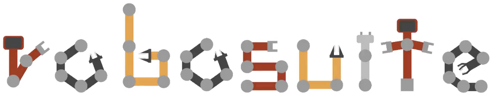

|
Abhishek Joshi I am a CS M.S.E. at Princeton University advised by Dr. Jia Deng in the Princeton Vision and Learning Lab. Previously, I recieved my undergraduate degree at the University of Texas at Austin where I graduated as part of the Turing Scholars program and was advised by Dr. Yuke Zhu in the Robot Perception and Learning Lab. I am an engineer interested in developing frameworks to enhance robot learning for the real world. Recently, I have worked on projects involving large scale simulation environments resembling human-centric environments and bridging the sim2real gap between the real and virtual worlds. |
{kind=link}
Research |
|
Infinigen-Sim: Procedural Generation of Articulated Simulation Assets
Abhishek Joshi, Beining Han, Jack Nugent, Yiming Zuo, Jonathan Liu, Hongyu Wen, Stamatis Alexandropoulos, Tao Sun, Alexander Raistrick, Gaowen Liu, Yi Shao, Jia Deng CoRL Learning to Simulate Robot Worlds Workshop, 2025 [Website] [Code] |
|
|
Zero-shot Sim2Real Transfer for Magnet-Based Tactile Sensor on Insertion Tasks
Beining Han, Abhishek Joshi, Jia Deng CoRL Dexterous Manipulation Workshop, 2025 |
|

|
Evaluating Robustness of Monocular Depth Estimation with Procedural Scene Perturbations
Jack Nugent, Siyang Wu, Zeyu Ma, Beining Han, Meenal Parakh, Abhishek Joshi, Lingjie Mei, Alexander Raistrick, Xinyuan Li, Jia Deng Neural Information Processing Systems (NeurIPS), 2025 [Code] |

|
RoboCasa: Large-Scale Simulation of Everyday Tasks for Generalist Robots
Soroush Nasiriany, Abhiram Maddukuri, Lance Zhang, Adeet Parikh, Aaron Lo, Abhishek Joshi, Ajay Mandlekar, Yuke Zhu Robotics: Science and Systems (RSS), 2024 [Website] [Code] |

|
Utilizing Diverse and Scalable Simulation for Mobile Manipulators in Human-Centric Environments
Abhishek Joshi, Soroush Nasiriany, Yuke Zhu University of Texas at Austin Undergraduate Thesis, 2024 Nominated for Best Undergraduate Thesis |
|
VIOLA: Imitation Learning for Vision-Based Manipulation with Object Proposal Priors
Yifeng Zhu, Abhishek Joshi, Peter Stone, Yuke Zhu Conference on Robot Learning (CoRL), 2022 [Website] [Code] |
Open Source Contributions |
|
MuJoCo
[Website] [Code] Developed bridge between the MuJoCo physics engine and USD file format to enable rendering of MuJoCo scenes in third party, higher quality renderers including NVIDIA Omniverse and Blender. This effort enables robot learning researchers to train models offline on higher quality images. |
|
|  |
robosuite
[Website] [Code] [Whitepaper] Contributed to expanding Robosuite's capabilities by integrating a broader set of robot models and manipulation tasks and by developing automated pipelines for creating new assets. Additionally, worked on mitigating the sim-to-real gap by integrating Isaac Sim's rendering capabilities. |
|
Infinigen
[Website] [Code] Contributed to Infinigen by introducing procedurally generated articulated assets and integrating articulated assets into robotics simulation. |